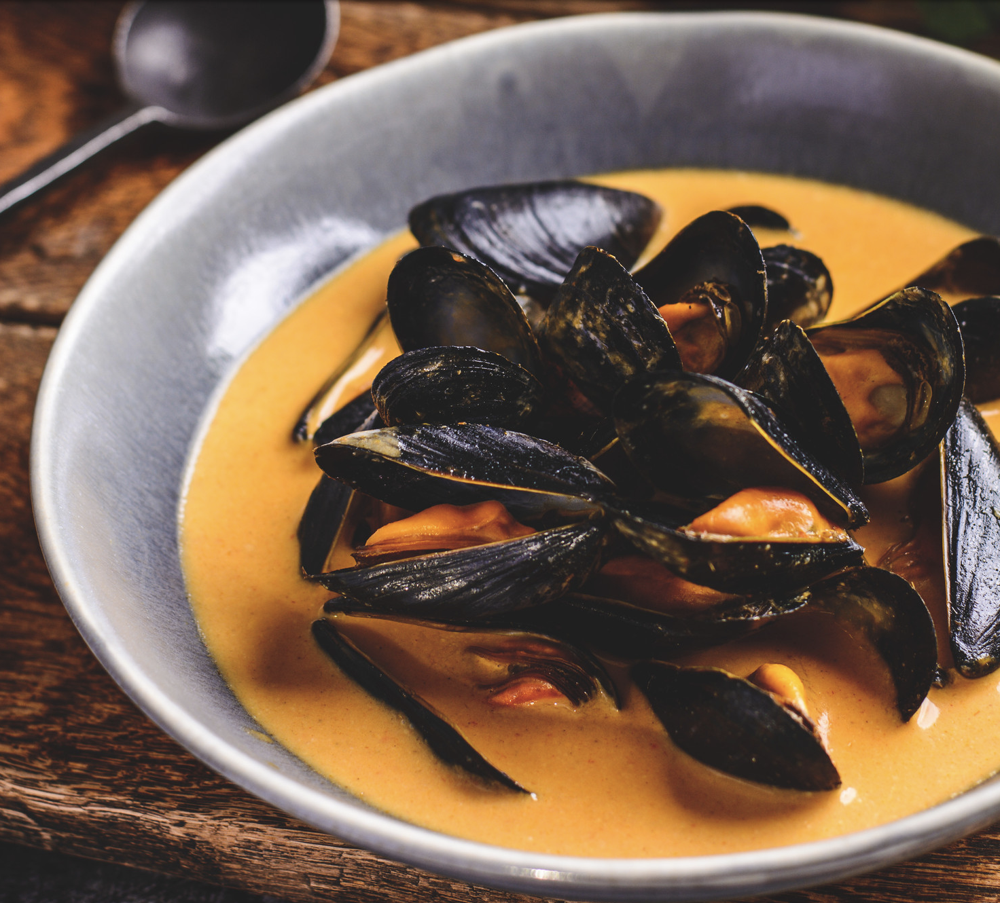

Red Curry Mussels

Description
Łukasz Babral does it again with this seafood recipe. Uploaded in December, 2020,
this dish gives you the illusion of seaside bliss, with each bite reminiscent of the
ocean these suculent lil' bits came from.
When considering buying mussels, look for:
- Pleasant sea smell
- The bright colour of the flesh
- No damage to the shell
Ingredients for red curry paste
- 4 red chillies, seeds removed and sliced (leave the seeds if you like it extra spicy)
- 40g (1.4oz) of peeled ginger, sliced
- 2 lemongrass stalks, outer layer removed and sliced
- 2 medium shallots, peeled and sliced
- 3 garlic cloves peeled and sliced
- 1tsp of ground coriander
- 1tsp of cumin
- 1tsp of mild chilli powder
- 0.5 tsp of black pepper
- 4tbsp of vegetable oil
- 1tsp of salt
Ingredients
- 700g (1.5Pounds) of Mussels
- 3tbsp of homemade red curry paste
- 400ml (0.42quarts) of coconut milk
- juice of 1 lime
- fresh coriander to garnish
- cooked Jasmine rice to serve with
- Prepare the curry paste by blending all the ingredients together to a smooth paste (chopping ingredients to fine pieces before blending, helps).
- High heat medium pan and fry half of the curry paste for 2 minutes.
- Pour in coconut milk and whisk it then add mussels.
- Cover with a lid and bring to the boil, then reduce to simmer.
- Cook mussels for 4 minutes.
- When ready drizzle with lime juice and serve immediately with rice and chopped coriander.